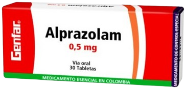

Alprazolam
De la familia de las benzodiacepinas que produce grados diversos de depresión del sistema nervioso central.
Mecanismo de Acción
Su acción agonista sobre los receptores que forman parte del complejo que funciona como receptor GABA, abre el canal y facilita el paso de los iones cloro a través de la membrana disminuyendo la excitabilidad neuronal.
Indicaciones
Estados de ansiedad, crisis de pánico con o sin agorafobia.
Contraindicaciones
Hipersensibilidad a las benzodiazepinas, miastenia gravis, insuficiencia respiratoria grave, síndrome de apnea del sueño, insuficiencia hepática grave, glaucoma de ángulo cerrado.
Presentaciones
-
Tabletas de 0,25 , 0.5 y 1 mg
-
Solución oral 0.75 mg/ml
Cuidados de enfermería
No administrar con antiácidos porque disminuye su absorción.
No utilizar a largo plazo porque produce dependencia (física-emocional).
Evitar las interrupciones bruscas.
Implementar medidas para prevenir caídas en pacientes mayores o aquellos con somnolencia excesiva.
Efectos adversos
Frecuentes:Ataxia, depresión, vértigo, confusión, desorientación, somnolencia, dificultad para concentrarse, alteraciones de la memoria.
Poco frecuentes:Amnesia, dolor abdominal, fatiga, irritabilidad, ira, agresión, hostilidad, agitación, trastornos de la libido, hiperactividad psicomotora.
Raras:Convulsiones, delirio, alucinaciones, pensamientos anormales, diarrea, estreñimiento, resequedad de boca, visión borrosa, aumento de la presión intraocular, cefalea, disartria, náusea, vómito, dificultad para orinar, disfunción sexual.
Clonazepam
Es una benzodiacepina que tiene efectos ansiolíticos, anticonvulsivos, sedantes, hipnóticos, actúa como relajante muscular y puede emplearse para el insomnio.

Mecanismo de Acción
Aumenta la potencia inhibitoria del GABA ; también se enlaza a receptores específicos en el sistema nervioso central como mecanismo para ejercer sus efectos farmacológicos.
Indicaciones
Ansiedad, Agitación, Síndrome de Lennox-Gastaut, Crisis epilépticas generalizadas, epilepsia crónica parcial.
Contraindicaciones
Hipersensibilidad a benzodiacepinas o dependencias de otras sustancias, incluido el alcohol, miastenia gravis, apnea del sueño, insuf. respiratoria severa, glaucoma de ángulo cerrado, hipercapnia.
Presentaciones
-
Tabletas de 0.5 y 2 mg
-
Solución oral 2.5 mg/ml
Cuidados de enfermería
No debe administrarse simultáneamente con carbamazepina;
Se debe iniciar y suspender de forma gradual.
No administrar con depresores del sistema nervioso.
Vigilar cuidadosamente a los pacientes propensos a la adicción debido a su predisposición a la habituación y a la drogodependencia.
Efectos adversos
Frecuentes:Debilidad muscular, excitación paradójica, somnolencia, incoordinación muscular, ataxia.
Poco frecuentes:Dificultad para concentrarse, movimientos corporales no controlados, visión borrosa, estreñimiento, diarrea, resequedad de la boca, cefalea, náusea, vómito, disartria.
Raras:Leucopenia, erupción cutánea, trastornos de la memoria, dificultad para dormir, disminución del apetito sexual.
Diazepam
Tiene efectos tranquilizantes, sedantes, relajantes musculares y anticonvulsivantes.

Mecanismo de Acción
Actúa con agonistas del receptor benzodiazepínico, componente de la unidad supramolecular que incluye receptores del GABA y un canal de cloruro inhibiendo las descargas neuronales y, en consecuencia, se reduce la excitabilidad celular.
Indicaciones
Estado de ansiedad, insomnio, síndrome de abstinencia alcohólica, espasmo muscular, crisis convulsivas recurrentes. Estado convulsivo.
Contraindicaciones
Hipersensibilidad a benzodiacepinas o dependencias de otras sustancias, incluido el alcohol, miastenia gravis, apnea del sueño, insuf. respiratoria severa, glaucoma de ángulo cerrado, hipercapnia.
Presentaciones
-
Comprimidos de 10 mg
Cuidados de enfermería
Vigilar tolerancia y dependencia física y psíquica al medicamento.
No administrar con fenotiacinas, opioides, barbitúricos, alcohol, antidepresores tricíclicos y anestésicos generales, debido a que aumenta efectos depresores.
Implementar medidas de seguridad para prevenir caídas en pacientes con mareos o sedación.
Efectos adversos
Frecuentes:Ataxia (especialmente en ancianos y en debilitados), vértigo, somnolencia (incluida la residual).
Poco frecuentes:Confusión, depresión mental.
Raras:Dolor abdominal, diarrea, estreñimiento, resequedad de boca, visión borrosa, euforia, cefalea, disartria, aumento de las secreciones bronquiales o salivales, náuseas, vómito.
Lorazepam
Pertenece a las benzodiacepinas, tiene propiedades ansiolíticas, hipnótico-sedantes, anticonvulsivas y relajantes musculares.
Mecanismo de Acción
Actúa de manera selectiva sobre los receptores GABA que median la transmisión inhibitoria sináptica a través del sistema nervioso central, disminuyendo la excitabilidad neuronal.
Indicaciones
Tratamiento a corto plazo de los trastornos de ansiedad. Ansiedad en estados psicóticos. Ansiedad asociada con depresión. Ansiedad reactiva. Síndrome de abstinencia al alcohol.
Contraindicaciones
Embarazo y lactancia, glaucoma de ángulo cerrado, enfermedad pulmonar obstructiva crónica, insuficiencia respiratoria, depresión intensa, intoxicación alcohólica.
Presentaciones
-
Comprimidos de 1 y 2 mg
Cuidados de enfermería
No debe administrarse simultáneamente con depresores del sistema nervioso, no utilizar a largo plazo porque produce dependencia y tolerancia. Sus efectos aumentan en personas mayores.
El riesgo de dependencia aumenta con las dosis altas o periodos prolongados de uso.
El empleo concomitante de clozapina y lorazepam puede producir sedación profunda, salivación excesiva y ataxia.
Efectos adversos
Frecuentes:Somnolencia, sedación, depresión respiratoria.
Poco frecuentes:Cefalea, confusión, desorientación, depresión, vértigo, acatisia, debilidad muscular, hipotensión, urticaria, aumento o disminución del peso corporal, cambios en el apetito, congestión nasal, hiperventilación, apnea.
Raras:Irregularidades menstruales, salivación, discrasias sanguíneas, dependencia física y psíquica, hiporreflexia.
Flumazenil (Antagonista de benzodiacepinas)
Se utiliza como antídoto para revertir los efectos de las benzodiacepinas. Es una imidazobenzodiazepina que neutraliza de forma total o parcialmente el efecto sedante central de las benzodiazepinas.
Mecanismo de Acción
Actúa inhibiendo de forma competitiva la actividad en el receptor GABA/benzodiazepina.
Indicaciones
Intoxicación por sobredosis de benzodiazepinas, reversión parcial o completa de la sedación producida por la administración de benzodiazepinas.
Contraindicaciones
Hipersensibilidad al fármaco, estados de ansiedad o de pánico, enfermedad cardiovascular, traumatismo craneoencefálico, enfermedad convulsiva, embarazo, lactancia.
Presentaciones
-
Solución inyectable 0.1 mg/ml
Cuidados de enfermería
Controlar las constantes vitales y el estado de alerta del paciente.
No debe administrarse simultáneamente con benzodiacepinas y antidepresivos tricíclicos porque provoca síndrome de carencia o convulsiones.
Monitorizar la aparición de posibles convulsiones.
Efectos adversos
Frecuentes:Ansiedad, nerviosismo, temblor, cefalea, boca seca, disnea, hiperventilación, palpitaciones, visión borrosa, vértigo, somnolencia residual o reemergente, náusea, vómito, dolor en el sitio de la inyección.
Poco frecuentes:Inestabilidad emocional (llanto, disforia, euforia, depresión mental, ideas paranoicas), hipertensión, sedación intensa, fatiga, bochornos, alteraciones auditivas, tromboflebitis en el sitio de la inyección.
Raras:Convulsiones, alucinaciones, reacciones alérgicas en la piel.
Fenitoína (Anticonvulsivos & Barbitúricos)
Tiene propiedades anticonvulsivas útiles en el control de diversas formas de epilepsia.

Mecanismo de Acción
Inhibe la propagación de la actividad convulsivante en la corteza motora cerebral: estabiliza el umbral promoviendo la difusión de sodio desde las neuronas.
Indicaciones
Estados convulsivos
Status epiléptico
Tratamiento de diversos tipos de epilepsia
Contraindicaciones
Hipersensibilidad
Embarazo y lactancia
Insf. Hepatica
Discracias sanguineas
Anemia aplásica
Lupus
Linfoma
Presentaciones
-
Cápsulas de 100 mg
-
Suspensión oral 25 mg/ml
-
Solución inyectable 250mg/5ml
Cuidados de enfermería
Controlar constantes vitales y ECG durante la infusión.
Evaluar función neurológica: nivel de conciencia, coordinación motora, y presencia de convulsiones.
Realizar monitoreo inicial de niveles séricos de fenitoína (rango terapéutico: 10-20 mcg/mL).
Evitar suspender el tratamiento abruptamente para prevenir convulsiones de rebote.
Efectos adversos
Frecuentes:nistagmo, vértigo, náusea, vómito, estreñimiento, hirsutismo, hiperplasia gingival.
Poco frecuentes:cefalea, insomnio, sacudidas musculares, erupción cutánea.
Raras:hiperplasia linfoide, agranulocitosis, trombocitopenia, ictericia, ataxia, dolor estomacal grave.
Propranolol - Metoprolol (Antagonista ß-Adrenérgicos)
A nivel psiquiátrico los antagonistas del receptor β-adrenérgico con frecuencia reducen rápidamente la ansiedad en el trastorno de pánico, fobia social y fobias específicas.
Mecanismo de Acción
Cardioselectivos y No cardioselectivos que actúan sobre receptores ß del corazón. Sin efecto estabilizador de membrana ni actividad simpaticomimética intrínseca.
Indicaciones
Coadyuvante en ansiedad, en pacientes con síntomas cardíacos o temblores. Agitaciones con síntomas cardiacos en adultos mayores
Contraindicaciones
Bradicardia. Hipotensión. Shock cardiogenico. Bloqueo. Atrioventricular de 2-3 grado. Insuficiencia cardiaca no controlada
Presentaciones
-
Tabletas de 40mg y 80 mg (Propranolol)
-
Comprimidos de 25, 50 y 100 mg (Metoprolol)
Cuidados de enfermería
No interrumpir abruptamente el consumo del farmaco debido a una hipertensión de rebote.
Monitorizar signos de bradicardia, hipotensión o arritmias.
Evaluar el nivel de ansiedad, la presencia de síntomas de pánico (palpitaciones, sudoración, temblores) y otros indicadores psicofisiológicos.
Efectos adversos
Frecuentes:Bradicardias, Hipotensión postural, extremidades frías, fatiga o cansancio.
Poco frecuentes:Fenómeno de Raynaud.